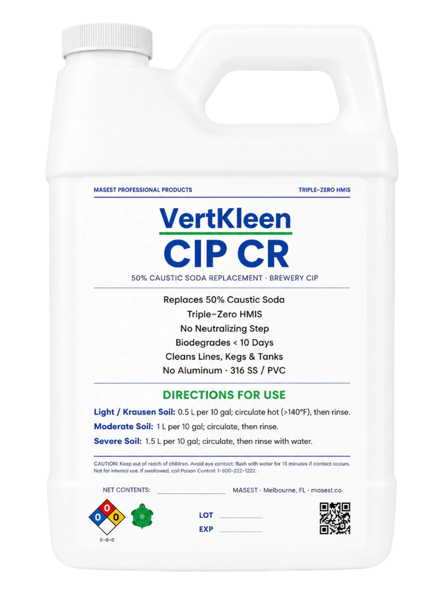

Made for jobs like these.
Buy small packs online or ask us to price drums, totes, and recurring supply.
- Brewery lines, kegs, and tanks
- Krausen, yeast, protein, and fat removal
- Hot-circulation alkaline wash cycles
- Mash tanks and heat exchangers
Orders by 2 pm ET ship the next business day. Unopened returns within 30 days. Shipping and returns
Clear krausen, yeast, protein, and fat from brewery tanks, kegs, and lines with a 50% caustic soda replacement. Keep the cleaning power. Simplify the rinse with no separate neutralizing step, zero VOCs, and HMIS 0-0-0 handling. Shop available sizes online. Need a drum or tote? Ask for a quote.
Browse all cleaners
Buy small packs online or ask us to price drums, totes, and recurring supply.
Start with the CIP CR label directions for your soil load. Measure the product, circulate through the equipment, then rinse with water.
| Soil load | Product per 10 gal |
|---|---|
| Light / krausen soil | 0.5 L |
| Moderate soil | 1 L |
| Severe soil | 1.5 L |
For light / krausen soil, the label specifies hot circulation above 140°F. Set circulation time and temperature for your equipment and cleaning endpoint; confirm the cycle with your brewery's verification procedure.
After roughly 10 days without CIP cleaning, the mash tank carried a heavy residue ring and bottom deposits. The trial mixed 5 L of CR into 55 gal of water at 160–170°F and circulated through the tank and heat exchanger for 25 minutes. The brewmaster judged the tank very clean. A separate 30-minute HCR step followed before the final rinse.
The manufacturer's CR technical data describes a high-pH wash that contains no conventional hydroxides and supports a simpler chemical-handling and rinse routine.
See product use, labor, rinse water, downtime, and finished-result tradeoffs for the cleaner you use now.
CR handles yeast, protein, fat, and organic film. HCR follows when beer stone, scale, or rust needs a mineral-cleaning step. These brewery results show the pair at work.

VertKleen CR and HCR replaced caustic and mineral acid while removing organics, beer stone, rust, and scale across brewery equipment.
Every job is different. Try it on your surface and compare the result.
CR removed yeast, protein, fat, and organic film first. HCR followed with beer stone, scale, and rust. Together, they gave brewery crews one repeatable two-step CIP cycle.
Bring your current wash recipe, soil load, and equipment details. MASEST can help set up a trial that measures cleaning, rinsing, and total cycle cost.
Compare chemical use, water, heat, labor, and downtime across the complete cycle.